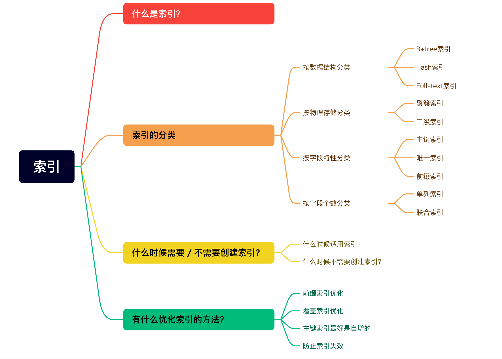
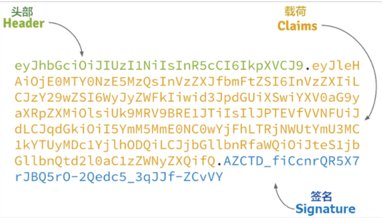

介绍
https://xiaolincoding.com/mysql/index/index_interview.html
索引的分类
- 按「数据结构」分类：B+tree索引、Hash索引、Full-text索引。
- 按「物理存储」分类：聚簇索引（主键索引）、二级索引（辅助索引）
- 按「字段特性」分类：主键索引、唯一索引、普通索引、前缀索引。
- 按「字段个数」分类：单列索引、联合索引。
不同数据结构实现的索引的差异
B+Tree
- 聚簇索引的叶子节点保存数据行的所有数据，并且相邻的叶子节点有（单向）指针指向下一个节点
- 只在叶子节点存储数据，段页区，每次取一页 16k，mei
Hash
- hash 索引只包含 hash 值和行指针
- hash 索引不是按照值顺序存储，无法进行排序
- hash索引使用索引列的全部内容计算 hash 值，因此不支持部分索引列匹配查找
- hash 索引数据非常快，除非有hash 冲突较多，出现 hash 冲突时，要遍历链表中所有的行指针，逐行检查知道符合
- hash 冲突较多时，删除也需要遍历 hash 链表中的每一行，冲突越多代价越大
- hash 只支撑等值比较查询 =、in()、<>，不支持范围查询
Full-text
慢查询分析与解决
https://blog.codinglabs.org/articles/theory-of-mysql-index.html
show variables like 'profiling'
set profiling=ON;
SHOW PROFILES;
SHOW PROFILE all limit 10;
数据库的时间字段有以下几种保存类型
DATETIME
- 存储的时间是服务器当前的时区的时间，查看mysql，存的是什么时间，查的就是什么时间 使用的时区
show VARIABLES like '%time_zone%' - datetime的存储范围是1000-01-01到9999-12-31
TIMESTAMEP
- 存储的时间是 UTC 时间，是将服务器当前时间转换为UTC(世界时间)来存储，查询的时候又会将 UTC 时间转换为当前时间。假如当前在东八区，那么存储的时间就是当前时间减去8小时的时间，当数据库的时区发生变化，查出来的时间也从 UTC 时间转换成当前时区的时间。
- timestamp的存储范围是1970-01-01到2038-01-19，时间范围较少
int(11)
- 存储的就是时间戳，是1970-01-01到至今的时间，时间戳有不同的精度，精确到 s 或者精确到 ms，这个需要根据业务需求来定，一般精确到 s 就够了，毕竟精确到 ms 会占用更多的存储空间，而且也不是很需要那么精确的时间。
- int(11)换算成的成时间就是 UTC 时间，所以在使用的时候，需要将 UTC 时间转换成当前时区的时间，这个时候就需要用到
CONVERT_TZ函数了。例如CONVERT_TZ(FROM_UNIXTIME(op.created), '+00:00','+8:00'),这里先用FROM_UNIXTIME函数把时间戳转换成 UTC 时间，然后再用CONVERT_TZ函数将 UTC 时间转换成当前时区的时间。
时间戳和时间转换
在这里 DATE_FORMAT(CONVERT_TZ(FROM_UNIXTIME(op.created), '+00:00','+8:00'),'%Y-%m-%d')就是把时间戳转换成时间，然后转换到对应的时区时间，再 format 处理成想要的时间格式。
设置时区
show VARIABLES like '%time_zone%'
SET time_zone = '+08:00';
高可用
GO111MODULE 变量
GO111MODULE = on 仍将强制使用 go module 机制
GO111MODULE = off 仍将强制使用 GOPATH 机制
GO111MODULE = auto 在 GOPATH 外部时，使用的是go module 机制，在 GOPATH 内部时使用的是 GOPATH 机制
包管理的版本支持
- GOPATH 机制
在 1.5 版本之前，所有的依赖包都是存放在 GOPATH/src 下，没有多版本控制。
- vendor 机制
golang 1.5 版本推出了 vendor 机制。所谓 vendor 机制，就是每个项目的根目录下可以有一个 vendor 目录，里面存放了该项目的依赖的 package。go build 的时候会先去 vendor 目录查找依赖，如果没有找到会再去 GOPATH 目录下查找。
- go module
go命令直接支持使用modules，包括记录和解析对其他模块的依赖性。modules替换旧的基于GOPATH的方法来指定在给定构建中使用哪些源文件。
go module
// 替换成本地依赖项
use replace github.com/maelvls/beers => ../beers
我想构建一个base 的公共库，给其他项目调,一开始想的很简单，直接在本地构建一个 base 库就搞定了就有了方案一
方案一：本地构建 base 库
-
在$GOPATH/src目录下创建项目
mkdir -p $GOPATH/src/github.com/jiebiubiu/base -
go mod init github.com/jiebiubiu/base -
正常写库中的组件逻辑
在另一个项目A 引用这个库，项目 A 的路径是$GOPATH/src/github.com/jiebiubiu/A
go.mod
module github.com/jiebiubiu/A
go 1.20
require github.com/jiebiubiu/base v0.0.0 // 引入
replace github.com/jiebiubiu/base v0.0.0 => ../base // 替换成 A 项目的相对路径去找base 库
导入使用使用 main.go
package main
import (
"github.com/jiebiubiu/base/logs"
)
func main(){
logs.InitLogger()
}
方案二：上传的 github 采用第三方库的方式导入
- 给 commit 打上一个标签
git tag v1.0.0然后push到仓库中git push origin v1.0.0 - 项目引用
go get github.com/jiebiubiu/base@v1.0.0然后就和正常库一样使用了
在这个过程遇到的坑
引入这个自定义的base第三方包遇到了一个这个问题：
go: github.com/jiebiubiu/base@v1.0.1: parsing go.mod: module declares its path as: github.com/Ho-J/base but was required as: github.com/jiebiubiu/base
为什么会遇到这个坑，是因为我这个 base 包一开始是 go mod init github.com/Ho-J/base 放在$GOPATH/src/github.com/Ho-J/base目录下，我想着把这个拆出来弄成第三方的包
然后在之前已经引入过的情况下出现这个问题
如何处理：
- base 项目 删除 go.mod go.sum 文件，执行
go clean -modcache重新go mod init github.com/jiebiubiu/base重新go mod tidy - base 项目打上一个新的 tag
git tag v1.0.1git push origin v1.0.1 - A 项目重新
go get github.com/jiebiubiu/base@v1.0.1就完成了
方案三：构建私有库
还没遇到这个需求先放一放
数据的类型
基本类型
- 整型，包括int，uint，int8，uint8，int16，uint16，int32，uint32，- int64，uint64，byte，rune，uintptr等
- 浮点型，包括float32，float64
- 复数类型，包括complex64，complex128
- 字符串类型，string
- 布尔型，bool
复合类型
- 数组
- struct结构体
引用类型
- slice
- map
- channel
- pointer or 引用类型
接口类型
interface io.Reader, io.Writer,error等
基本类型比较：两个变量类型必须一样才能比较
- 类型完全不一样的，不能比较
- 类型再定义关系，不能比较，可以强转比较
- 类型别名关系，可以比较
fmt.Println("2" == 2) //invalid operation: "2" == 2 (mismatched types string and int)
type A int
var a int = 1
var b A = 1
fmt.Println(a == b) //invalid operation: a == b (mismatched types int and A)
fmt.Println(a == int(b)) //true
type C = int
var c C = 1
fmt.Println(a == c) //true
复合类型的变量比较
- 数组的元素类型和长度必须一致
- 结构体相同类型的结构体才能比较，匿名结构体的中包含的字段要一致，顺序也要一致，不能包含 map，有 map 就无法比较
引用类型比较
- slice类型不可比较，只能与零值nil做比较。
- map类型和slice一样，不能比较，只能与nil做比较。
- 普通的变量引用类型&val和channel，同一个引用就是同一个指针，相同就是一样的
interface{}类型变量的比较
接口类型的变量，包含该接口变量存储的值和值的类型两部分组成，分别称为接口的动态类型和动态值。只有动态类型和动态值都相同时，两个接口变量才相同。
type Person interface {
getName() string
}
type Student struct {
Name string
}
type Teacher struct {
Name string
}
func (s Student) getName() string {
return s.Name
}
func (t Teacher) getName() string {
return t.Name
}
func main() {
s1 := Student{"minping"}
s2 := Student{"minping"}
t := Teacher{"minping"}
fmt.Println(Person(s1) == Person(s2)) //true
fmt.Println(Person(s1) == Person(t)) //false,类型不同
}
函数类型比较
函数无法比较
slice和map的特殊比较
- 使用反射
m1 := map[string]int{"foo": 1, "bar": 2}
m2 := map[string]int{"foo": 1, "bar": 2}
// fmt.Println(m1 == m2) // map can only be compared to nil
fmt.Println(reflect.DeepEqual(m1, m2)) // true
m2 = map[string]int{"foo": 1, "bar": 3}
fmt.Println(reflect.DeepEqual(m1, m2)) // false
m3 := map[string]interface{}{"foo": [2]int{1,2}}
m4 := map[string]interface{}{"foo": [2]int{1,2}}
fmt.Println(reflect.DeepEqual(m3, m4)) // true
var m5 map[float64]string
fmt.Println(reflect.DeepEqual(m5, nil)) // false
fmt.Println(m5 == nil) // true
s := []string{"foo"}
fmt.Println(reflect.DeepEqual(s, []string{"foo"})) // true
fmt.Println(reflect.DeepEqual(s, []string{"bar"})) // false
s = nil
fmt.Println(reflect.DeepEqual(s, []string{})) // false
s = []string{}
fmt.Println(reflect.DeepEqual(s, []string{})) // true
- []byte类型的变量，使用工具包byte提供的函数就可以做比较
s1 := []byte{'f', 'o', 'o'}
s2 := []byte{'f', 'o', 'o'}
fmt.Println(bytes.Equal(s1, s2)) // true
s2 = []byte{'b', 'a', 'r'}
fmt.Println(bytes.Equal(s1, s2)) // false
s2 = []byte{'f', 'O', 'O'}
fmt.Println(bytes.EqualFold(s1, s2)) // true
s1 = []byte("źdźbło")
s2 = []byte("źdŹbŁO")
fmt.Println(bytes.EqualFold(s1, s2)) // true
s1 = []byte{}
s2 = nil
fmt.Println(bytes.Equal(s1, s2)) // true
GOOS : 目标平台 mac 对应 darwin linux 对应 linux windows 对应 windows
GOARCH ：目标平台的体系架构【386，amd64,arm】, 目前市面上的个人电脑一般都是amd64架构的 386 也称 x86 对应 32位操作系统 amd64 也称 x64 对应 64位操作系统 arm 这种架构一般用于嵌入式开发。 比如 Android ， IOS ， Win mobile , TIZEN 等
CGO_ENABLED : CGO 表示golang中的工具，CGO_ENABLED 表示CGO禁用，交叉编译中不能使用CGO的
GOOS 目标平台
GOARCH 编译平台
# linux 下去执行
CGO_ENABLED=0 GOOS=linux GOARCH=amd64 go build main.go
CGO_ENABLED=0 GOOS=windows GOARCH=amd64 go build main.go
CGO_ENABLED=0 GOOS=darwin GOARCH=amd64 go build main.go
一致性 hash
protobuf grpc 安装
https://github.com/grpc/grpc-go
https://grpc.io/docs/languages/go/quickstart/
go get -u google.golang.org/grpc
go install google.golang.org/protobuf/cmd/protoc-gen-go@v1.28
go install google.golang.org/grpc/cmd/protoc-gen-go-grpc@v1.2
protobuf 语法
https://protobuf.dev/programming-guides/proto3/
syntax = "proto3";
option go_package = "./;pb";
package helloworld;
// The greeting service definition.
service Greeter {
// Sends a greeting
rpc SayHello (HelloRequest) returns (HelloReply) {}
rpc Search (SearchRequest) returns (SearchResponse);
}
message SearchRequest {
string key = 1;
}
message SearchResponse{
string value = 1;
}
// this is a comment
message Student {
string name = 1;
bool male = 2;
repeated int32 scores = 3;
}
// The request message containing the user's name.
message HelloRequest {
string name = 1;
}
// The response message containing the greetings
message HelloReply {
string message = 1;
}
参数说明
service-collection git:(main) ✗ protoc --go-grpc_out=./proto/pb --go_out=./proto/pb --proto_path=. proto/*.proto
option
option go_package = "{out_path};out_go_package";
前一个参数用于指定生成文件的位置，后一个参数指定生成的 .go 文件的 package 。
一般使用这个配置option go_package = "./;pb";，生成的就是和.proto 同层文家下，这样的文件package 是 pd notice_task.pb.go
还有另外一种指定方式，命令行生成的时候 也使用--go_opt=paths=source_relative直接指定 protoc 中 指定的是绝对路径，这样就不会去管 protobuf 文件中指定的路径。
–proto_path=.
指定在当前目录( grpc-go-example)寻找 import 的文件（默认值也是当前目录）
然后 protobuf 文件中的 import 路径如下,其他路径都是以这个路径作为相对路径去寻址
–go_out=./proto/pb
指定将生成文件放在指定目录( ./proto)，同时因为 proto 文件中也指定了目录为option go_package = "./;pb";,具体如下：
所以最终生成目录为--go_out+go_package= /proto/pb
proto/*.proto 要编译的文件
import 注意事项
import "proto/common.proto"; 这里的路径是相对路径，这个相对路径是相对于生成命令 --proto_path 这里指定的路径来说的
使用：
common.proto
syntax = "proto3";
option go_package = "./;pb";
package pb;
message PingReq {
string name = 1;
}
message PingResponse{
string message = 1;
}
notice_task.proto
syntax = "proto3";
option go_package = "./;pb";
package pb;
import "proto/common.proto";
// The greeting service definition.
service Greeter {
// Sends a greeting
rpc Ping(pb.PingReq) returns (pb.PingResponse);
}
生成 go 文件
小疑问：https://zhuanlan.zhihu.com/p/441638893
protoc --go-grpc_out=. --go_out=. *.proto
protoc --go-grpc_out=./proto --go_out=./proto --proto_path=. proto/*.proto
proto 文件引用的问题 https://mileslin.github.io/2020/04/Golang/Import-%E5%85%B6%E4%BB%96-proto/
https://www.lixueduan.com/posts/protobuf/01-import/
头部
alg属性表示签名的算法（algorithm），默认是 HMAC SHA256（写成 HS256）；typ属性表示这个令牌（token）的类型（type），JWT 令牌统一写为JWT。
{
"alg": "HS256",
"typ": "JWT"
}
Payload
Payload 部分也是一个 JSON 对象，用来存放实际需要传递的数据。JWT 规定了7个官方字段，供选用。
- iss (issuer)：签发人
- exp (expiration time)：过期时间
- sub (subject)：主题
- aud (audience)：受众
- nbf (Not Before)：生效时间
- iat (Issued At)：签发时间
- jti (JWT ID)：编号
签名字段
Signature 部分是对前两部分的签名，防止数据篡改。
jwt 问题
（1）JWT 默认是不加密，但也是可以加密的。生成原始 Token 以后，可以用密钥再加密一次。
（2）JWT 不加密的情况下，不能将秘密数据写入 JWT。
（3）JWT 不仅可以用于认证，也可以用于交换信息。有效使用 JWT，可以降低服务器查询数据库的次数。
（4）JWT 的最大缺点是，由于服务器不保存 session 状态，因此无法在使用过程中废止某个 token，或者更改 token 的权限。也就是说，一旦 JWT 签发了，在到期之前就会始终有效，除非服务器部署额外的逻辑。
（5）JWT 本身包含了认证信息，一旦泄露，任何人都可以获得该令牌的所有权限。为了减少盗用，JWT 的有效期应该设置得比较短。对于一些比较重要的权限，使用时应该再次对用户进行认证。
（6）为了减少盗用，JWT 不应该使用 HTTP 协议明码传输，要使用 HTTPS 协议传输。
token 泄漏的问题解决
-
ip绑定⽅式 ⽣成token的时候，加密的payload加⼊当前⽤户ip。拦截器解密后，获取payload的ip和当前访问ip判断是否同个，如果不是则提示从新登录 优点：服务端⽆需存储相关内容，性能⾼，假如⽤户⼴州登录，泄露了token给四川的⿊客，依旧⽤不了 缺点：如果⽤户⽤使⽤过程中ip变动频繁，则操作会经常提 示重新登录，体验不友好
-
时间设置的短一些
https://z.wiki/tech/uuid.html
UUID的标准型式包含32个16进制数字，以连字号分为五段，形式为8-4-4-4-12的32个字符，
如：550e8400-e29b-41d4-a716-446655440000。
UUID包含32个16进制数字，分为5段，5段长度分别为8、4、4、4、12，中间使用连字符连接。
例如：xxxxxxxx-xxxx-Mxxx-xxxx-xxxxxxxxxxxx
其中M表示 UUID的版本,从 uuid生成 (opens new window)可以看出，M位置的值和版本是一致的。
| 名称 | 长度 （字节） | 长度（16进制数字码长） | 说明 |
|---|---|---|---|
| time_low | 4 | 8 | 整数：低位 32 bits 时间 |
| time_mid | 2 | 4 | 整数：中间位 16 bits 时间 |
| time_hi_and_version | 2 | 4 | 最高有效位中的 4 bits“版本”，后面是高 12 bits 的时间 |
| clock_seq_hi_and_res clock_seq_low | 2 | 4 | 最高有效位为 1-3 bits“变体”，后跟13-15 bits 时钟序列 |
| node | 6 | 12 | 48 bits 节点 ID |
UUID由以下几部分的组合： （1）当前日期和时间，UUID的第一个部分与时间有关，如果你在生成一个UUID之后，过几秒又生成一个UUID，则第一个部分不同，其余相同。 （2）时钟序列。 （3）全局唯一的IEEE机器识别号，如果有网卡，从网卡MAC地址获得，没有网卡以其他方式获得。
UUID Version 1：基于时间的UUID
UUID Version 2：DCE安全的UUID
DCE（Distributed Computing Environment）安全的UUID和基于时间的UUID算法相同，但会把时间戳的前4位置换为POSIX的UID或GID。这个版本的UUID在实际中较少用到。
UUID Version 3：基于名字的UUID（MD5）
基于名字的UUID通过计算名字和名字空间的MD5散列值得到。这个版本的UUID保证了：相同名字空间中不同名字生成的UUID的唯一性；不同名字空间中的UUID的唯一性；相同名字空间中相同名字的UUID重复生成是相同的。